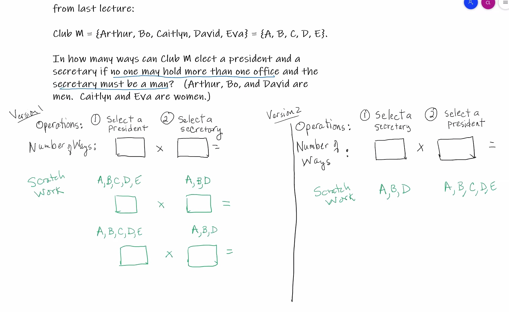
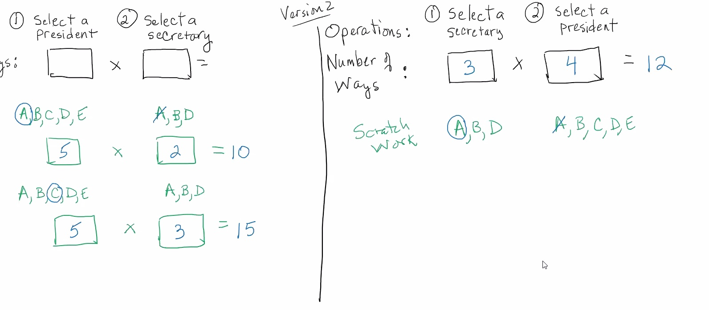
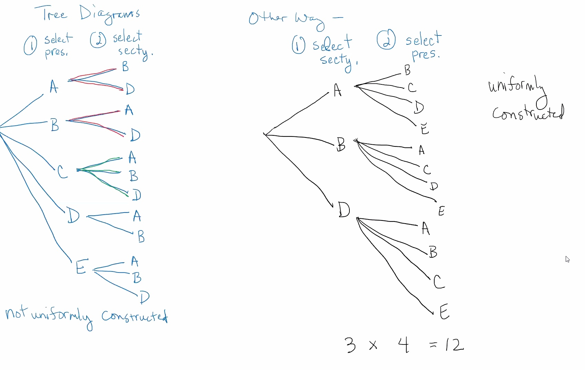
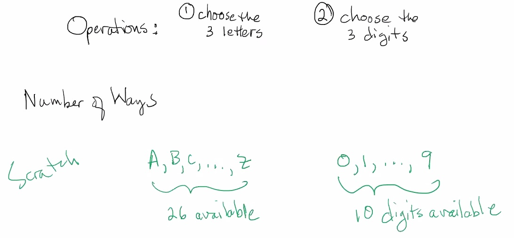
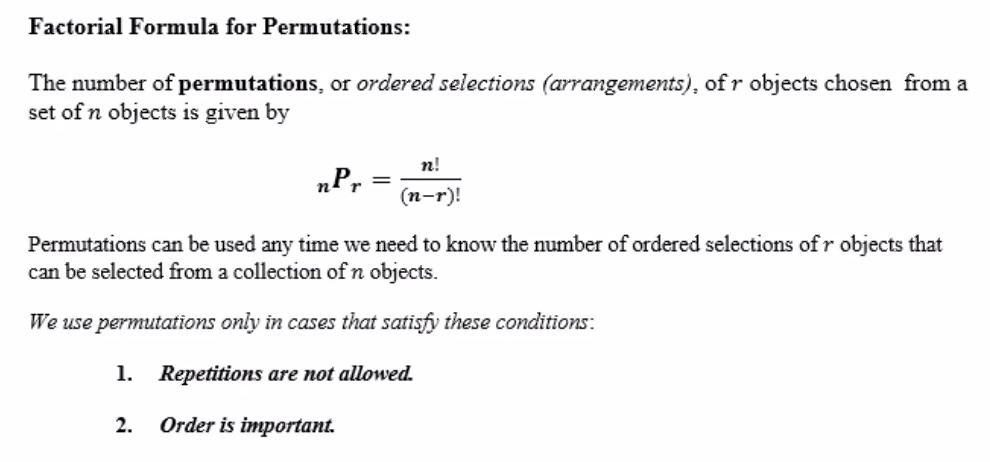

As a rule of thumb: count the most restricted parts first. (Start with the subset first)
In some states, auto license plates have contained three letters followed by 3 digits.
How many such license plates are possible?

How many such license plates end in 555?
Stat50 lect 2.2 Perms and Combos Formulas.pdf
A permutation is an ordering of a collection of objects.
There are six permutations of the letters A, B, C:
ABC, ACB, BAC, BCA, CAB, CBA
The definition of
Theorem: The number of permutations of
n objects isn! .
Let club
How many ways can all of the club members arrange themselves in a row for a photo?
How many ways can the club elect a president, a secretary, and a treasurer if no one can hold more than one office?

An ATM requires a four digit PIN using the digits 0-9 (the first digit may be 0). How many such PINs have no repeated digits?
A combination is an unordered selection (subset).
Let
A committee of 3 members would be an unordered selection (a combination), for example: